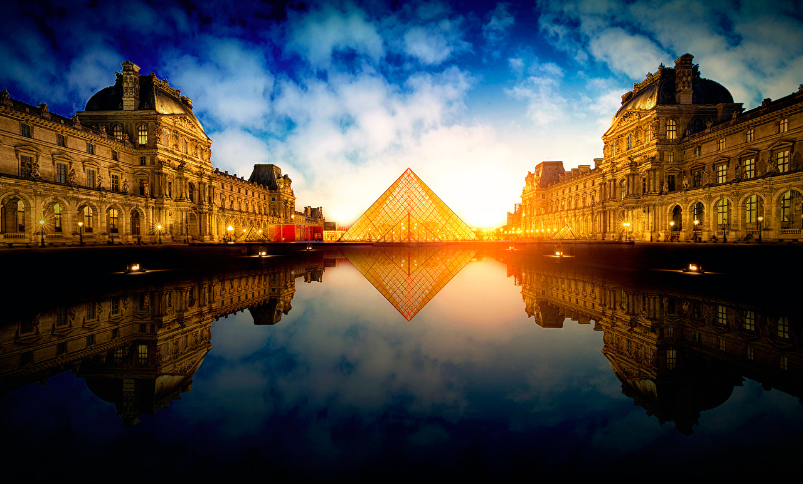
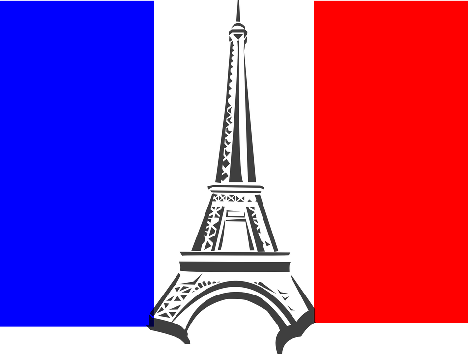

France
Нескончаемым потоком путешественники всего мира едут во Францию в любое время года.В Париже они посещают знаменитые музеи, расслабляются в уютных ресторанчиках, заказывают свои портреты художникам на Монмартре, бродят по королевским дворцам в столичных пригородах.Летом Лазурный берег манит гостей Франции позагорать на всемирно известных пляжах Ниццы, Сен-Тропе, Канн, Антиба и Ментона.
На Атлантическом побережье к услугам туристов Биарриц — Мекка любителей активного отдыха, гольфа и виндсерфинга.
Зимой на прекрасные зимние курорты слетаются горнолыжники. Молодёжь собирается в местечках Тинь, Менуир, Ла Плань, респектабельная публика в Куршевеле, Шамони и Межев, для спокойного семейного отдыха публика выбирает Мерибель и Ле дез Альп.

Оставьте заявку
Если вы желаете узнать подробности о турах в страну,эксурсиях по городам и прейскурант цен, отправьте нам сообщение, и в ближайшее время мы ответим.